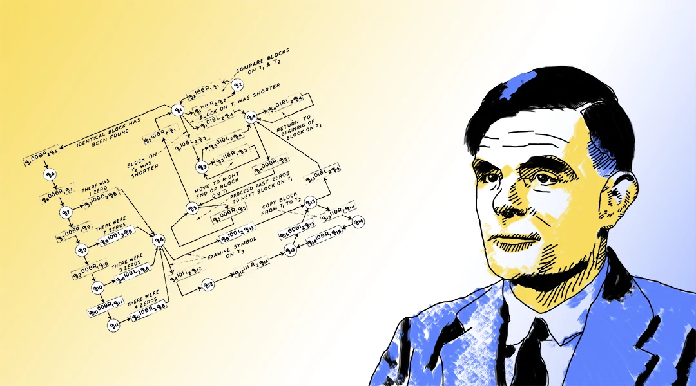

Alan Turing

Nome completo: Alan Mathison Turing
Data de Nascimento: 23/07/1912
Local de Nascimento: Londres, UK.
Falecimento: 07/07/1954 (41 anos).
Notáveis criações: Máquina de Turing, Criptoanálise da máquina alemã Enigma.
A lógica é um dos principais ramos de estudo da filosofia. Desde os princípios da filosofia, desde os Pré-socráticos, já se utilizava de princípios lógicos para argumentar e estabelecer relações de pensamento. Quando Anaximandro propôs que o planeta era cilíndrico, ele ancorou suas ideias em princípios lógicos. Suas ideias, apesar de incorretas, faziam sentido se considerado o poderío tecnológico da época. Pode-se perceber a utilização de ideias lógicas na obra de Pitágoras de Samos, o famoso filósofo e matemático creditado pela criação do Teorema de Pitágoras.
Na obra de Pitágoras e seus discípulos, os Pitagóricos, as conclusões matemáticas são sempre alcançadas com base em princípios lógicos (a lógica é base para o pensamento matemático). Outro exemplo da utilização da lógica na estruturação matemática dos Pré-socráticos é a lógica presente nas demonstrações geométricas de Euclides em "Os Elementos". Nessa obra, o matemático propõe, inicialmente 5 postulados, que serão as bases de toda a estruturação lógica nas demonstrações. Euclides faz uso do pensamento lógico para concluir, partindo de 5 afirmações iniciais para estruturar basicamente toda a geometria plana aprendida nas escolas até hoje.
A lógica e seus princípios sempre foi amplamente utilizada na estruturação do pensamento de filósofos e pensadores. Porém, o grande pensador da lógica em si foi Aristóteles.

Nome completo: Aristóteles, filho de Nicômaco de Estagira
Data de Nascimento: 384 a.C.
Falecimento: 322 a.C. (62 anos).
Principais interesses: Física, metafísica, poesia, teatro, música, retórica, política, governo, ética, biologia, zoologia.
Influência: Platão.
Discípulo notável: Alexandre, o Grande.
Aristóteles foi o grande filósofo a pensar a lógica (ele a chamava de "Analítica"). Ele encontrou e documentou em sua obra "Organon" todos os seus pensamentos e formulações a respeito das regras e formalização da lógica. Depois de Aristóteles, a lógica passou a ser um estudo formal, ou seja, tudo aquilo que antes era intuído passou a ser formalizado, com regras e condutas.
Inicialmente, ele percebeu e definiu a estruturação lógica como sendo formada de proposições, isto é, enunciações. No começo, têm-se uma ideia que pode ser enunciada. "O céu é azul" ou "O carro anda rápido" são ambos exemplos de proposições. A lógica e seu estudo gira em torno de proposições. Quando se tem pelo menos duas proposições que, entre elas, existe algo em comum, pode-se começar a estudar a lógica.
Aristóteles definiu três princípios básicos (tais quais os postulados de Euclides) a partir dos quais é feito o estudo da lógica:
Todo objeto é idêntico a si mesmo.
Duas afirmações contraditórias não podem ser verdadeiras ao mesmo tempo.
Para qualquer proposição, ou ela é verdadeira ou sua negação é verdadeira.
Partindo desses princípios e do conceito de proposição, é possível elaborar um raciocínio lógico dedutivo: partindo de pelo menos duas proposições lógicas entre si, é possível chegar à uma conclusão lógica. Por exemplo:
Sendo as duas premissas verdadeiras, é fácil identificar que, por ser um ser-humano, Sócrates também há de ser mortal, já que todo e qualquer ser-humano é mortal. Ou seja:
Sabendo disso, Aristóteles resolveu classificar as proposições quanto à sua qualidade (afirmativas e negativas) e à quantidade (universal, particular e singular), além de estabelecer as chamadas Regras do Silogismo:
Para aprofundar: Silogística Aristotélica pelo Prof. Paulo Margutti.
A chamada Lógica Formal (ou Lógica Simbólica) tem cunho matemático e não trabalha mais com palavras ou raciocínio básico. A Lógica Simbólica faz uso de símbolos para representar as proposições e relações lógicas. Ela tem alicerces na Teoria dos Conjuntos.
Não é objetivo dessa página trazer reflexões e conteúdos profundos a respeito da Lógica Formal, mas, para aqueles que se interessarem, recomendo a leitura do primeiro capítulo do livro "Fundamentos da Matemática Elementar - Conjuntos e Funções" que aborda também a utilização matemática da Lógica Simbólica. Pode-se consultar, também o trabalho de Gottlob Frege, pai da lógica matemática moderna, representado na imagem.
Para aprofundar: Fundamentos da Matemática Elementar - Conjuntos e Funções
Nome completo: Alan Mathison Turing
Data de Nascimento: 23/07/1912
Local de Nascimento: Londres, UK.
Falecimento: 07/07/1954 (41 anos).
Notáveis criações: Máquina de Turing, Criptoanálise da máquina alemã Enigma.
Por definição:
No estudo da computação (nossa área! =), a lógica é fundamental para a criação e implementação de algorítmos. Para a resolução de um problema, primeiro podemos dividí-lo em problemas menores (assim como Sócrates fazia!). Assim, podemos lidar com cada um dos pequenos problemas separadamente!
Desde os primórdios da computação, com a concepção inicial de um computador pelo britânico Alan Turing, a máquina sempre fora uma maneira mais fácil de resolver problemas mecânicos. Turing, considerado por todos o pai da computação, foi o responsável por chefiar a criação de um computador (considerado o primeiro computador) que "venceu" a máquina Alemã Enigma.
Para aprofundar: Alan Turing and Enigma - Playlist de vídeos do canal Computerphile a respeito da máquina Enigma.
A resolução de problemas computacionais é uma maneira de facilitar a vida daqueles que estudam algo. Um computador consegue, com muito mais velocidade, executar processos que seriam delegados à um humano. Desse modo, esse humano que agora não precisa mais se preocupar com processor meramente mecânicos (fazer contas, por exemplo), agora pode utilizar sua capacidade cerebral para pensar criativamente nos problemas! O humano que antes estava preso em procedimentos mecânicos agora está livre para ser criativo enquanto um computador executa as tarefas repetitivas para ele!
Devemos sempre correr atrás de mais e mais conhecimento! O conhecimento em outras áreas pode sempre ser útil no seu campo. Espero que tenha se interessado, pelo menos um pouquinho pelo fascinante estudo da filosofia e da matemática.
Para aprofundar: O Jogo da Imitação - Filme que retrata a história do pai da computação, Alan Turing. Vale a pena assistir!